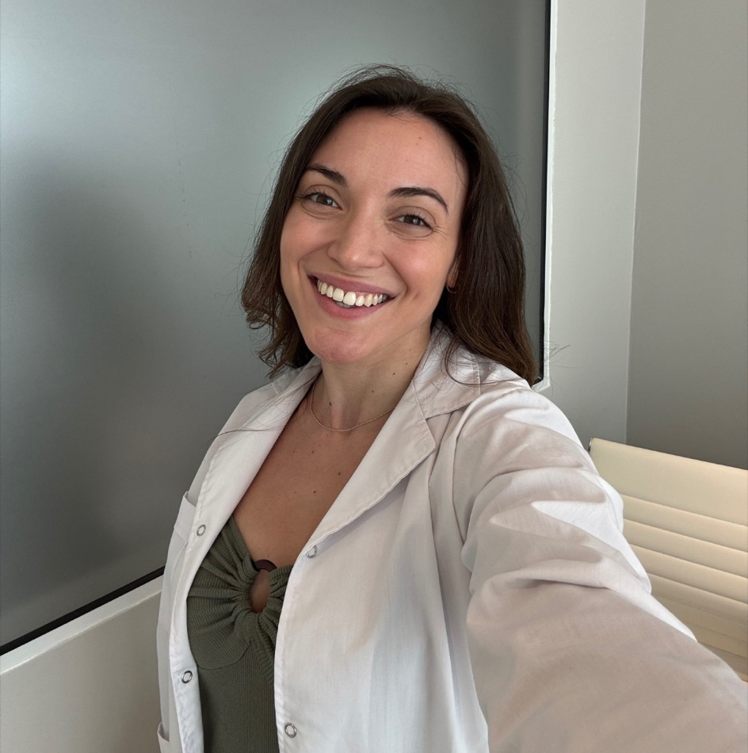
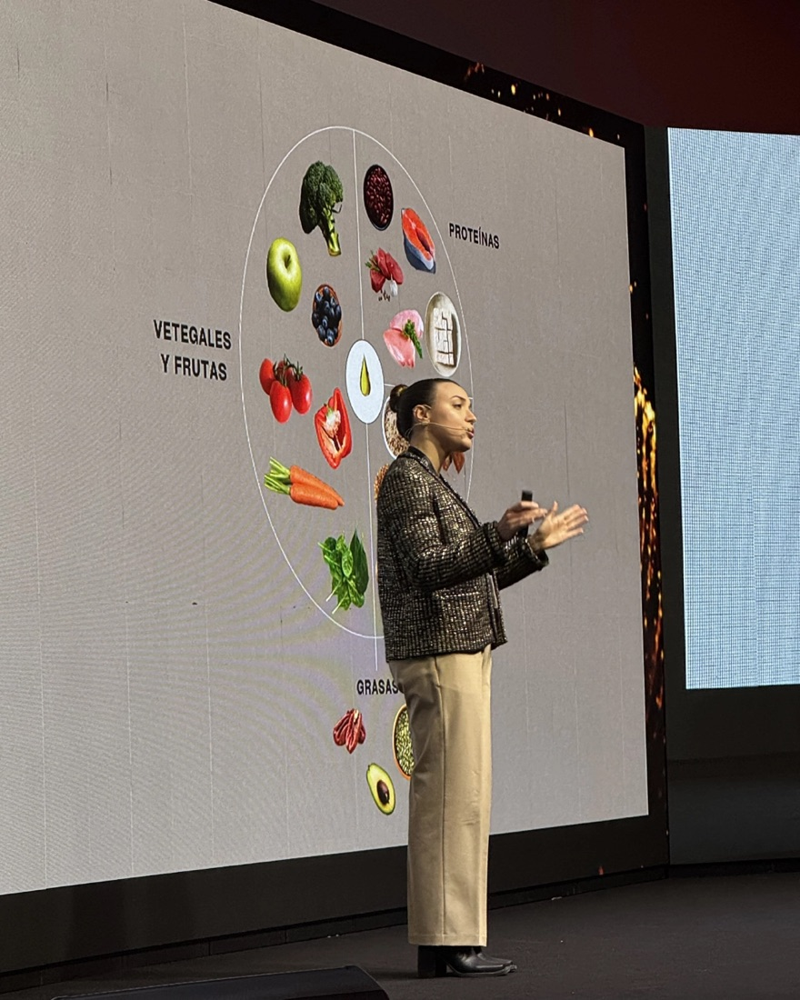

¿Quién soy?
Hola, conozcámonos un poco más
Soy Médica Especialista en Nutrición y Alimentación Basada en Plantas. Mi trabajo consiste en ayudar a mujeres a transformar su salud desde un enfoque integral que combina medicina, nutrición, entrenamiento y hábitos sostenibles.
Creo que sentirse fuerte, saludable y segura de una misma no debería depender de la fuerza de voluntad, sino de construir una estructura que permita sostener cambios reales en el tiempo.
Ver más sobre Cuerpo Presente →El movimiento siempre fue parte de mi vida
Desde los 2 años hago actividad física. A lo largo de mi vida pasé por disciplinas muy diferentes: patín artístico, danza, vóley, entrenamiento de fuerza, CrossFit competitivo y running.
Cada una me enseñó algo distinto, pero todas me ayudaron a comprender el impacto que tiene el movimiento sobre la salud, la confianza y la forma en que nos relacionamos con nosotros mismos. Con el tiempo entendí que entrenar no se trata solamente de cambiar el cuerpo: también se trata de desarrollar disciplina, resiliencia y bienestar.
Una mirada integral sobre la salud
A medida que avanzaba en mi formación médica, entendí que muchas mujeres no necesitaban más información, sino una forma diferente de abordar su salud.
La alimentación, el ejercicio, el descanso, los hábitos y la mentalidad no funcionan de manera aislada. Cuando trabajan juntos, los cambios físicos dejan de ser una lucha constante y se vuelven sostenibles.
Con esa visión me especialicé en Nutrición, Alimentación Basada en Plantas, Medicina del Estilo de Vida y Salud Metabólica, y desarrollé Cuerpo Presente: un programa creado para acompañar a mujeres que buscan transformar su cuerpo, mejorar su salud y recuperar la confianza en sí mismas desde un enfoque integral.
Ver más sobre Cuerpo Presente →Divulgación
También soy speaker y divulgadora
Además de mi trabajo clínico, participo activamente como speaker y divulgadora en temas de nutrición, ejercicio y salud.
A través de charlas y espacios educativos comparto herramientas basadas en evidencia científica para ayudar a más personas a comprender cómo la alimentación, el movimiento y los hábitos cotidianos pueden transformar su calidad de vida.
He participado como disertante en congresos y eventos relacionados con menopausia y salud de la mujer, alimentación para deportistas y el impacto de la nutrición sobre la salud de la piel.

La transformación empieza desde adentro
Creo que la confianza en vos misma es el punto de partida de cualquier cambio.
No se trata de encontrar la dieta perfecta ni de depender de la fuerza de voluntad. Se trata de construir hábitos que funcionen con tu vida, aprender a cuidarte de forma sostenible y volver a confiar en vos.
Cuando la alimentación, el ejercicio y la mentalidad trabajan en la misma dirección, los cambios físicos dejan de ser una lucha y se convierten en una consecuencia. Si estás lista para sentirte más fuerte, saludable y conectada con vos misma, me encantaría acompañarte.